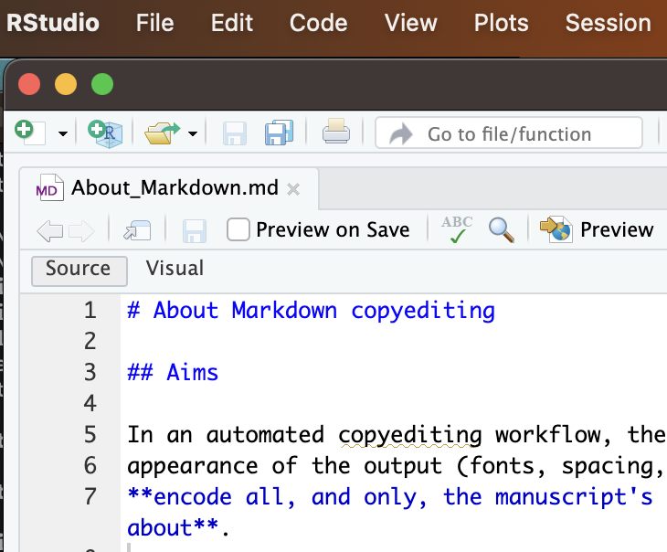
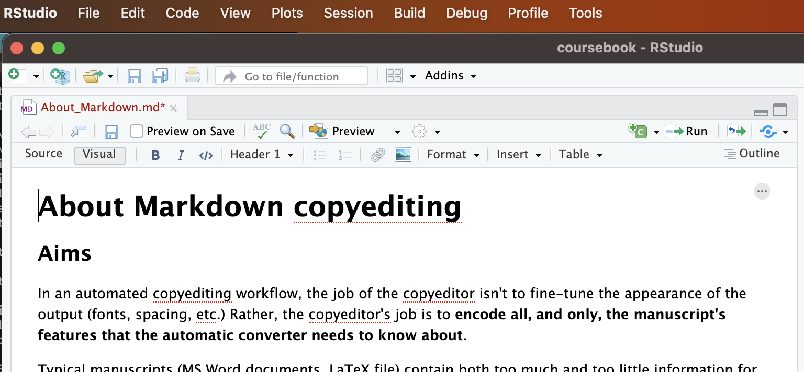

6 About Markdown copyediting
6.1 Aims
In an automated copyediting workflow, the job of the copyeditor isn’t to fine-tune the appearance of the output (fonts, spacing, etc.) Rather, the copyeditor’s job is to encode all, and only, the manuscript’s features that the automatic converter needs to know about.
Typical manuscripts (MS Word documents, LaTeX file) contain both too much and too little information for a publisher’s purposes. A MS Word file contains information about font use and margin size, which the publisher must get rid of since they’re applying their own font and margins. It also typically fails to encode crucial information in in a machine-readable way. For instance, an author may:
- use mere boldface to indicate their section titles: 1. Methods. A human reader understands that they mean a section heading. But an automatic converter needs to know that this is section title, and not a simple bold text, to typeset it correctly.
- manually write ‘(Dupuis 2020, pp. 29-42)’ for their citations. If an automatic converter knows that this is a citation of a given paper, at a given page range, it can turn it into a link, format it consistently throughout the journal (instead of ‘2020: 29–42’ in some papers and ‘2019, pp.12-15’ in others), and check that all and only references cited appear in the bibliography.
- manually write internal cross-references (“see fn. 6”, “see page 8”). If an automatic converter knows that these are meant to refer to other parts of the text, they can turn them into links and adjust them if the numbering changes.
Our copyediting task is to remove unnecessary formatting, and turn important features into codes that the automatic processor can pick up and deal with.
Markdown is a light-weight, intuitive way of encoding meaningful features. For instance:
a *simple* solutionencodes a word that needs to be emphasized (typically, italics, but it’s for the automatic converter to decide).# Methodologyencodes a heading titled “Methodology”.[@Doe2019, 22-29]encodes a citation of the pages 22 to 29 of an article that the converter will find under the nameDoe2019in the article’s associated bibliography file.
6.2 Style
We will rely on the Chicago Manual of Style in most cases, except where we state otherwise.
6.3 What to encode
When copyediting we need to decide which features of the original manuscript we want to keep, or encode, in our document. For instance, we don’t want to keep the author’s specific choice of fonts, or whether they italicize headings. But we do want to keep italics used for emphasis, or hyphens used to cut a word at the end of a line.
The goal is to encode non-stylistic features of the article, and those features only. The stylistic or merely presentational ones are handled automatically by your journal style.
The features we keep are encoded in markdown syntax. For instance, emphasis (italics) is encoded by enclosing words within asterisks:
In this sentence the last world is *emphasized*.When a feature is encoded, the journal’s template ‘understands’ it. This means that it’ll be able to typeset it correctly, according to the journal style, in all the outputs formats we need—PDF, webpage, ebook.
Here’s a list of features we want to encode. The list is in progress: not everything we want to encode is handled by our template yet. An X under “syntax” means that there is markdown code (aka syntax) to encode the feature in question. An X under “implemented” means that our template is able to typeset the feature in question.
| Feature | Syntax? | Imple mented? | Note |
|---|---|---|---|
| Headings | Yes | Yes | |
| Paragraphs | Yes | Yes | |
| Footnotes | Yes | Yes | |
| Emphasis (italics, bold) | Yes | Yes | |
| Superscripts and subscripts | Yes | Yes | |
| Citations | Yes | Yes | |
| Cross-reference: heading | Yes | Yes | |
| Cross-reference: footnote | Yes | No | |
| Cross-reference: specific location | Yes | No | Must be handled separately in PDF vs HTML. |
| Cross-reference: image, figure, table | Yes | Yes | |
| Cross-reference: theorem, statement | Yes | Yes. | |
| Quotations: block quotations | Yes | Yes | Encoding the source too? |
| Quotations: inline | Yes | Yes | Unnecessary. Ordinary ’ or ” is enough. |
| Lists: numbered, unnumbered | Yes | Yes | |
| Lists: continuously numbered throughout the text | Yes | Yes | |
| Lists: ad-hoc numbers ((9’), (a*)…) | Yes | Yes | |
| Statements: simple indented blocks | Yes | Yes | |
| Tables | Yes | Yes | |
| Tables: column alignment | Yes | Yes | |
| Tables: cells spanning several rows or cols | No | Yes | handled by pandoc but not documented yet |
| Tables: custom borders | No | No | |
| Formulas | Yes | Yes | |
| Images | Yes | Yes | |
| Links | Yes | Yes | as bib entries or footnotes |
| Columns (incl. formulas side by side) | Yes | Yes |
Here are some features not to be preserved:
| Feature | Note |
|---|---|
| Links in the text | Preferably as bibliography entries, otherwise in footnotes |
| Curly quotes | handled by pandoc |
| Special positioning of formulas, tables, … | To be avoided as much as possible |
Note on special symbols:
- Special symbols must typically be preserved. For instance, the double square brackets should not be entered as
[[and]]but with their LaTeX codes\\llbracketand\rrbracket.
6.4 About Markdown
Markdown is a syntax - a way of writing or encoding document. A markdown document is a plain text file that can be viewed in any text editor REWRITE THIS
is a syntax enhanced plain text with machine-readable information, a.k.a. ‘markup’. More specifically, we’ll use pandoc’s Markdown - the variant of that syntax that is most suited to academic texts and that is fully understood by our automatic converter, pandoc.
The copyediting files we work on are thus in pandoc’s Markdown format (extension .md). These are just plain text documents, which can be edited with any text editor (Notepad, TextEdit, …), but where we use a certain codes to encode information needed by our automatic document converter (pandoc). For instance, a document may contain the line:
In this article, I will prove that the *metaphysical* question is not nonsense.
where the * encode the fact that the word “metaphysical” is emphasised. The automatic converter can pick up on that information and typeset the word accordingly in the PDF and HTML outputs. Typically, emphasized words are typeset in italics, but we could decide to typeset them with small caps or letter spacings as well. So we only encode the fact that the word is to be emphasized, using the * notation, and leave the rest to the converter.
The official documentation of pandoc’s Markdown can be used to supplement the instructions below.
6.5 RStudio visual markdown editor
For background see also Quarto’s page on RStudio visual mode.
When you open a markdown file in RStudio, you’ll see Source and Visual tabs in the upper left corner. These are two different ways of visualizing the same document. The Source mode shows the document as it is, namely a plain text markdown file. The Visual mode shows the document as a webpage would display HTML code, or as a word processor like MS Word displays documents: text encoded with emphasis is shown in italics, text encoded as headings is shown in a larger font, etc.
Here’s the Source mode:

Here’s the Visual mode:

You can switch between modes by clicking the ‘Source’ and ‘Visual’ tab. Exception: RStudio may refuse to switch to Visual if doing so would break down some elements in your document. (This is notably the case with numbered examples.)
The Visual mode allows you to edit without using markdown code. You can insert headings, italics, formulas, tables and so on by clicking in the menus. You can also insert more complicated structural elements, e.g. a Div with its id and attributes.
The Source editor shows you the markdown file as it is. There’s some syntax highlighting to help you visualize markdown codes.
There’s a useful “outline” button at the top left to see the headings of the document.
You can still type markdown in the visual editor—it’s usually faster to do so. Try it out: type ## Test at the beginning of a line and the line will be converted to a level 2 heading. You can type formulas, enter Divs and so on.1
The visual editor is good for initial copyediting (if your document allows using it): you’ll see the text and typos better. The source editor is good final copyediting and typesetting: you see the exact code used to generate your output and you fix special characters, line breaks, explicit LaTeX code and the like.
6.6 Heads up on special characters in markdown
In Markdown the characters below are sometimes have a special meaning:
\ & * $ [ ] _ @
Normally, you shouldn’t have to worry about them. But if they aren’t visible or your markdown file generates error when turned into PDF, they may be the culprit. Typically the error can be avoided by ‘escaping’ the character, i.e. preceding it with a backslash. Hence:
\& means & (nb, mandatory in BibTeX files!)
\* means *
\\ means \
\$ means $
Etc.
The one exception is the square brackets. Markdown syntax allows two ways of encoding math formulas: wrapping them in $ or wrapping them in parentheses or brackets:
$...$and\(...\)can be used to enter an inline formula$$...$$and\[...\]can be used to enter a display (i.e. block) formula
So if you try to espace both an opening and a closing bracket, your markdown will be read as a math formula.
Here are problem cases you might encounter:
A reference cited is titled Fear & Loathing in Las Vegas. You have the title with
&in your BibTeX file, and it generates an error.The problem is that in LaTeX/BibTeX
&is a special character (to indicate tabs).Solution: ‘escape’ the ampersand in your BibTeX file:
title = {Fear \& Loathing in Las Vegas}Your text has a pair of asterisks:
Principle (*) is strong. Principle (*) is stronger than Principle (**).The text between the asterisks is wrongly interpreted as emphasized:
Principle () is strong. Principle () is stronger than Principle (**).
Solution: escape the asterisks:
Principle (\*) is strong. Principle (\*) is stronger than Principle (\*\*).Principle (*) is strong. Principle (*) is stronger than Principle (**).
Square brackets for elided texts in citations. In practically all cases they’ll be fine. The following markdown code will display as intended, for instance:
The [simple] models [...] are usefulThere’s only trouble in a rare case: the elided text matches a section header. For instance, suppose you have:
The simple [models] are useful. ## ModelsThis is wrongly interpreted as a link:
The simple models are useful.
Why? Pandoc automatically assign the header “Models” a link identifier:
models(see the chapter on cross-referencing). And if this identifier is present,[models]becomes a link to it. And one of the section headings is “Models”.Solutions:
- If you’re working in markdown code, leave it as is. We run pandoc with an option that disables these links.
- If you’re working in the RStudio visual mode, add an identifier to the header,
## Models {#sec:models}(Pandoc) or## Models {#sec-models}(Quarto)
Limitations: if many LaTeX formulas are inline in one paragraph the visual editor struggles to parse them and may mangle them, turning some text into formulas and the other way round; if so you’d better off using the source mode.↩︎